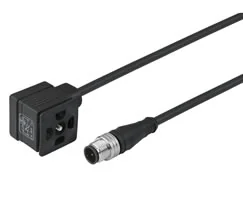

IO-Link Masters & I/O Modules
IO-Link master và I/O module Norgren tập trung tín hiệu từ cảm biến – cơ cấu chấp hành và kết nối lên mạng điều khiển nhà máy qua fieldbus. Khi chọn, bạn cần xác định số cổng IO...
Nhóm Industrial Communication / IO-Link của Norgren gồm cáp và đầu nối (cables & connectors), IO-Link master và I/O module, giúp kết nối cảm biến – cơ cấu chấp hành vào mạng điều khiển nhà máy. Khi mở rộng hoặc bảo trì hệ thống, số cổng, chuẩn truyền thông (IO-Link, fieldbus), cấp bảo vệ IP, kiểu đầu nối (M8/M12) và sơ đồ chân là các yếu tố cần khớp, vì vậy nên đối chiếu part number với datasheet trước khi báo giá. Nếu bạn đang thay một module hoặc cáp trên tủ điều khiển, hãy gửi mã cũ để xác nhận số cổng và chân kết nối tương thích. Trang phục vụ đội mua hàng, kỹ sư tự động hóa và bảo trì nhà máy tại Việt Nam cần tra cứu nhanh theo mã, so sánh biến thể và tìm phụ kiện liên quan như cáp nối dài, đầu bịt và phụ kiện gá lắp. Gửi mã hoặc BOM để được tư vấn đúng cấu hình.

IO-Link master và I/O module Norgren tập trung tín hiệu từ cảm biến – cơ cấu chấp hành và kết nối lên mạng điều khiển nhà máy qua fieldbus. Khi chọn, bạn cần xác định số cổng IO...

Cáp và đầu nối (cables & connectors) Norgren kết nối cảm biến, cơ cấu chấp hành và IO-Link master trong tủ điều khiển và trên máy. Khi chọn, bạn cần xác định kiểu đầu nối (M8/M1...
IO-Link master, PROFINET interface, x1 5 pin M12 plug, x11 5 pin M12 sockets

IO-Link I/O module, Auxillary power, x2 4 pin M12 plugs, x8 4 pin M12 sockets

IO-Link I/O module, Standard, x1 4 pin M12 plugs, x8 4 pin M12 sockets

IO-Link master, EtherNet/IP interface, x1 5 pin M12 plug, x11 5 pin M12 sockets
Industrial ethernet cable, 5 m, 4 pin, open end, M12 x 1, 250 V AC/DC

Valve connector, 0.6 m, 3 pin, DIN EN 175301‑803 Form B, 24 V AC/DC, with indicator

Valve connector, 2 m, 3 pin, DIN EN 175301‑803 Form A, 24 V AC/DC, with indicator

Industrial ethernet cable, 0.5 m, 4 pin, M12 x 1, 50 V AC / 60 V DC

Valve connector, 2 m, 3 pin, DIN EN 175301‑803 Form C, 24 V AC/DC, with indicator

Valve connector, 2 m, 3 pin, DIN EN 175301‑803 Form B, 24 V AC/DC, with indicator

Valve connector, 5 m, 3 pin, DIN EN 175301‑803 Form B, 24 V AC/DC, with indicator

Valve connector, 0.6 m, 3 pin, DIN EN 175301‑803 Form A, 24 V AC/DC, with indicator
Gửi part number module cũ hoặc ảnh nhãn; chúng tôi đối chiếu datasheet Norgren để xác nhận số cổng, chuẩn truyền thông và kiểu đầu nối trước khi báo giá.
Chúng tôi xác nhận số chân, kiểu mã hóa (A/B/D-coded) và chiều dài theo datasheet. Bạn gửi yêu cầu chân kết nối để chúng tôi chọn đúng mã.
Có. Khi báo giá module, chúng tôi liệt kê phụ kiện liên quan như cáp, đầu bịt cổng và gá lắp để đảm bảo lắp đặt đầy đủ.